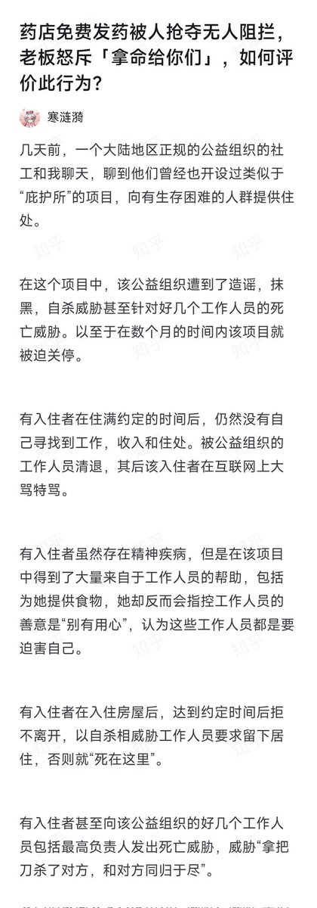
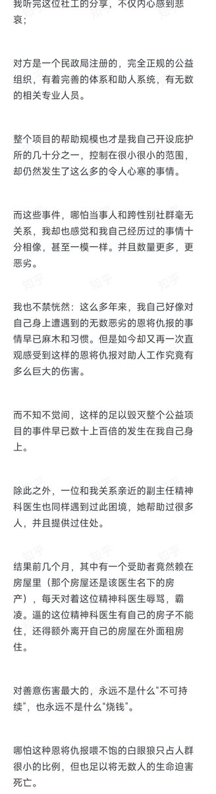

过去十几年的救助经历告诉我，只要是真的在做事，就一定会被攻讦。过去十多年来，无数个助人者，无数个公益组织，最终都要么黯然退出，要么在“雕刻花瓶”，陷入免责怪圈
事不关己最轻松，无论多少人死，都不会有责任，如果不是真在帮人解决问题，而是“雕刻花瓶”，无数对我恶意攻讦，从一开始都不会发生

事不关己最轻松，无论多少人死，都不会有责任，如果不是真在帮人解决问题，而是“雕刻花瓶”，无数对我恶意攻讦，从一开始都不会发生


上课有感
很多时候我给别人的回复是为了免责而不是为了解决问题，比如问要不要吃糖，抑郁，焦虑怎么治疗，我给的建议都是先去三甲医院就诊。用处很小，但我一定不被晶哥找上，也不会因此被当事人及家长指摘，当事人od了割手了自杀了怪不到我头上
关于只为解决问题不顾免责是啥样，参考寒涟漪
很多时候我给别人的回复是为了免责而不是为了解决问题，比如问要不要吃糖，抑郁，焦虑怎么治疗，我给的建议都是先去三甲医院就诊。用处很小，但我一定不被晶哥找上，也不会因此被当事人及家长指摘，当事人od了割手了自杀了怪不到我头上
关于只为解决问题不顾免责是啥样，参考寒涟漪